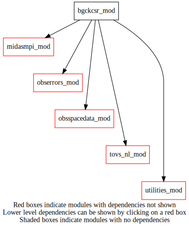
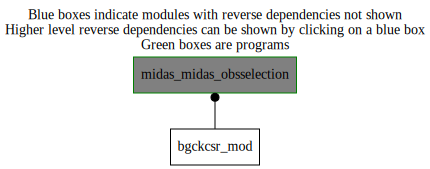

Dependency Diagrams:
 Direct Dependency Diagram¶
 Reverse Dependency Diagram¶
Description
MODULE bgckcsr_mod (prefix=’csrbg’ category=’1. High-level functionality’)
- Purpose
To perform CSR data background Check
Quick access
- Routines
csrbg_bgcheckcsr(),csrbg_csrcheckqc(),csrbg_init(),csrbg_readobsfromobsspace(),csrbg_updateobsspaceafterqc()Needed modules
midasmpi_mod: MODULE midasMpi_mod (prefix=’mmpi’ category=’8. Low-level utilities and constants’)
utilities_mod: MODULE utilities_mod (prefix=’utl’ category=’8. Low-level utilities and constants’)
obsspacedata_mod: MODULE obsSpaceData_mod (prefix=’obs’ category=’6. High-level data objects’)
tovs_nl_mod: MODULE tovs_nl (prefix=’tvs’ category=’5. Observation operators’)
obserrors_mod: MODULE obsErrors_mod (prefix=’oer’ category=’2. B and R matrices’)Variables
Subroutines and functions
- subroutine bgckcsr_mod/csrbg_init()¶
- Purpose
This subroutine reads the namelist section NAMCSR for the module.
- Called from
- Call to
- subroutine bgckcsr_mod/csrbg_bgcheckcsr(obsspacedata)¶
- Arguments
obsspacedata [struct_obs ,inout] :: obspaceData Object
- Called from
- Call to
obs_getheaderindex(),obs_headelem_i(),tvs_isidburpinst(),utl_tmg_start(),csrbg_init(),csrbg_readobsfromobsspace(),csrbg_csrcheckqc(),csrbg_updateobsspaceafterqc(),utl_tmg_stop()
- subroutine bgckcsr_mod/csrbg_readobsfromobsspace(obsspacedata, headerindex, obstb, omptb, satzenithangle, obsflags, cloudamount, obschannels, sensorindex, obsdate, obshour, burpfilesatid, maxanglereached, topographicdata, noncorrecteddata, istbpresent, isclearsky, straylight, goesmidi, istoassim, ompoutofrange)¶
- Arguments
obsspacedata [struct_obs ,inout] :: obspaceData Object
headerindex [integer ,in] :: current header index
obstb (*) [real ,out,allocatable] :: brightness temperature (btyp=9248/9264,ele=12163)
omptb (*) [real ,out,allocatable] :: OMP values
satzenithangle (*) [real ,out,allocatable] :: satellite zenith angle (btyp=3072,ele=7024)
obsflags (*) [integer ,out,allocatable] :: data flags
cloudamount (*) [integer ,out,allocatable] :: data flags
obschannels (*) [integer ,out,allocatable] :: Tb Channels
sensorindex [integer ,out] :: find tvs_sensor index corresponding to current obs
obsdate (*) [integer ,out,allocatable] :: date YYYYMMDD
obshour (*) [integer ,out,allocatable] :: Hour HHMM
burpfilesatid [character ,out] :: Platform Name
maxanglereached (*) [logical ,out,allocatable] :: satellite angle exceed max angle at obs
topographicdata (*) [logical ,out,allocatable] :: data flagged as topo data
noncorrecteddata (*) [logical ,out,allocatable] :: data non corrected by bias corr
istbpresent (*) [logical ,out,allocatable] :: non missing data
isclearsky (*) [logical ,out,allocatable] :: clear sky obs
straylight (*) [logical ,out,allocatable]
goesmidi (*) [logical ,out,allocatable] :: goes noon
istoassim (*) [logical ,out,allocatable] :: is channel assimilable
ompoutofrange (*) [logical ,out,allocatable]
- Called from
- Call to
obs_headelem_i(),tvs_mapsat(),tvs_mapinstrum(),utl_abort(),obs_elem_c(),obs_headelem_r(),obs_bodyelem_r(),obs_bodyelem_i()
- subroutine bgckcsr_mod/csrbg_csrcheckqc(obsflags, categorierejet, maxanglereached, topographicdata, noncorrecteddata, istbpresent, isclearsky, straylight, goesmidi, istoassim, ompoutofrange)¶
- Arguments
obsflags (*) [integer ,inout] :: obs Flags to update
categorierejet (7) [integer ,inout] :: the 7 categories of rejections
maxanglereached (*) [logical ,in] :: satellite angle exceed max angle at obs
topographicdata (*) [logical ,in] :: data flagged as topo data
noncorrecteddata (*) [logical ,in] :: data non corrected by bias corr
istbpresent (*) [logical ,in] :: non missing data
isclearsky (*) [logical ,in] :: clear sky obs
straylight (*) [logical ,in]
goesmidi (*) [logical ,in] :: goes noon
istoassim (*) [logical ,in] :: is channel assimilable
ompoutofrange (*) [logical ,in] :: abs of omp greater than threshold
- Called from
- subroutine bgckcsr_mod/csrbg_updateobsspaceafterqc(obsspacedata, obsflags, headerindex, sensorindex)¶
- Arguments
obsspacedata [struct_obs ,inout] :: obspaceData Object
obsflags (*) [integer ,in] :: data flags
headerindex [integer ,in] :: sensor Index
sensorindex [integer ,in] :: sensor Index
- Called from
- Call to
{kind=link}
{kind=link}